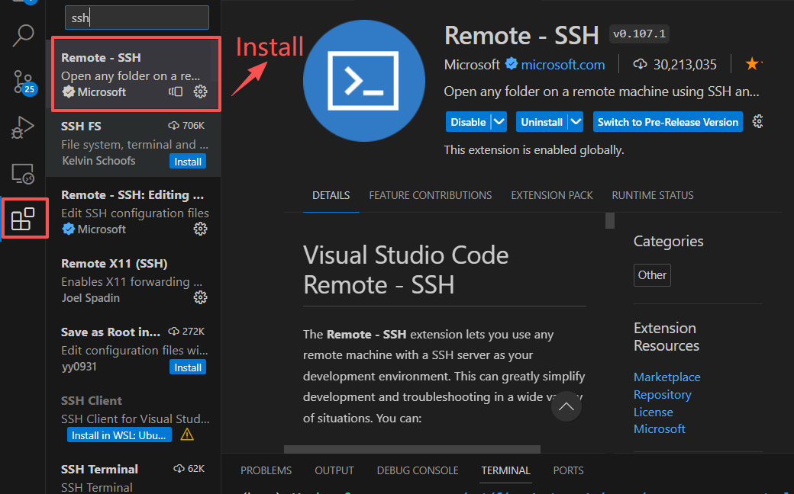
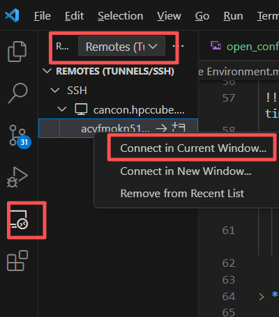
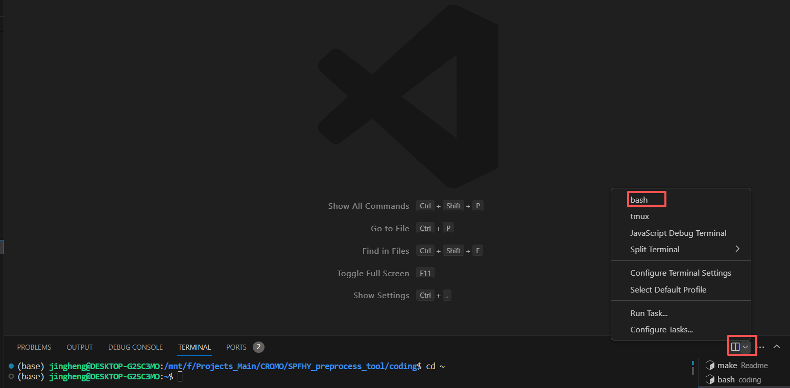

1. Set up Environment
1.1. Download and Install Visual Studio Code (VS Code)
👉 https://code.visualstudio.com/
Note
Some older servers do not support connections to the latest version of VS Code.
If you are using an older server, it is recommended to use version 1.85.2 or earlier.
1.2. Connect VS Code to the Cluster
Important
If you do not plan to use Auto‑calibration, then a cluster is not required and you may skip this section.
Any Linux system will work. On Windows, you can simply connect VS Code to WSL to run the model. Refer to the links below: https://learn.microsoft.com/en-us/windows/wsl/install
https://code.visualstudio.com/docs/remote/wsl
1.2.1. Step 1: Install the Remote - SSH Extension

1.2.2. Step 2: Configure the Cluster Host Information

After opening the SSH config file, enter the login details for your cluster.
Example A
Normal connection:
Host cancon.hpccube.com
HostName cancon.hpccube.com
Port 65023
# IdentityFile <path_to_id_rsa.pub>
User acvfmokn51
Example B
Some clusters require jumping to an available compute node.
You can type sinfo to check the available nodes in the Slurm system:
Host unifr
HostName beo05.unifr.ch
User huangj
Port 22
# IdentityFile <path_to_id_rsa.pub>
Host node-compute
HostName node84
ProxyJump unifr
User huangj
Note
👉 If you don’t want to enter your password every time, you need to create an SSH key.
In some clusters, this is required.
Open a bash shell or command line and type:
ssh-keygen -t rsa -b 4096
Under
C:\Users\XXX\.ssh(XXX = your username), you will findid_rsa.pub.
Copy the content into~/.ssh/authorized_keyson the server.For Mac users, the procedure is the same:
https://mdl.library.utoronto.ca/technology/tutorials/generating-ssh-key-pairs-mac
Reference:
https://docs.github.com/en/authentication/connecting-to-github-with-ssh/generating-a-new-ssh-key-and-adding-it-to-the-ssh-agent
1.2.3. Step 3: Connect to the Server
Note
The first connection may take some time.

1.3. Create the Conda Environment
Use Conda or Mamba to create an isolated Python environment for SPHY.
1.3.1. Step 1: Open VS Code and Open the Terminal

Install the Linux version of Miniconda:
wget https://repo.anaconda.com/miniconda/Miniconda3-latest-Linux-x86_64.sh
bash ~/Miniconda3-latest-Linux-x86_64.sh
source ~/.bashrc
Note
If you are using WSL, make sure you open the correct WSL target.
1.3.2. Step 2: Create the Environment from the YAML File
Download all necessary files from https://github.com/jingheng-huang/SphySetup
(or usegit pull) into a single folder on your Linux system.

Create the environment using the YAML file:
conda env create -f environment.yml

Once installation is complete, test whether the environment works:
conda activate pcraster
1.3.3. Install Required System Packages
Ubuntu example:
sudo apt install nco cdo
sudo apt install gdal-bin libgdal-dev
Note
The database can be downloaded from XX.
It is very large and may take a long time to download.